This tutorial describes how to successfully load sample data into VOEIS. A sample data value is an individual value or measurement that is associated with a sample volume collected from some medium, such as stream water grab samples or soil core samples. Individual samples may be associated with one or more variables. For example, a single grab sample of stream water can be analyzed for DOC, DIN, and [Ca]. Therefore, the way this data is stored in VOEIS is different than logger data. The relationship between the individual data sample values and the sample ID is preserved. When users query on a single sample ID, VOEIS will return the data values for all of the variables associated with that sample.
The VOEIS workflow for loading data samples is constructed to load data from individual files. VOEIS currently supports comma delimited text files (.csv). These files may have one or more header rows, but the first instance of sample data values in each column must occur in the same row.
The current VOEIS workflow requires that sample data input files be site specific. A single input file must not contain data from more than one site. Data files must include sample IDs, date/time stamps, and data sample values for one or more variables. Data must be organized to include individual columns for sample IDs, date/time stamps, and variables such that a given row contains sample data values (one or more variables) that were measured from a single sample collected at a specific date/time. If sample data is organized in a spreadsheet, it must be saved as a .csv file prior to loading data in VOEIS.
VOEIS can accept and parse numerous date/time formats, but the following format is recommended: ‘MM/DD/YYYY HH:MM’. A single numeric value or text string must represent all no-data values in any given column. It is a good idea to preserve metadata for each variable in the data input file. Metadata can be included in a header row, or in a separate file.
IMPORTANT: Due to the unique characteristics of lab sample data and the way that data relationships are stored in VOEIS, it is critical to only include lab sample values that were collected from the same sample medium (e.g. surface water) using the same method (e.g. grab sample), and analyzed by the same lab in a single input file.
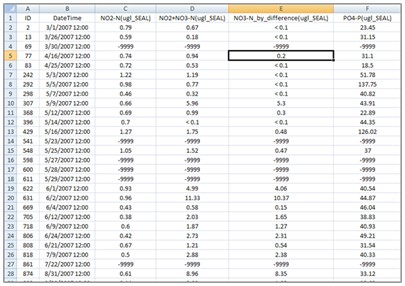
After saving the data file as a .csv file, use the following steps to load data into VOEIS.
1. Navigate to the VOEIS Data Hub using your web browser and log in. Then select the project you would like to add data to from the Projects dropdown as shown below.
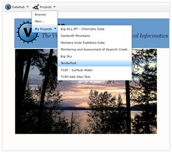
2. In the (Project_Name) dropdown menu, select ‘Add Sample Data’
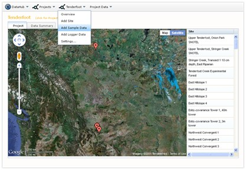
3. In Step 1 of the data upload wizard, select the site that your data will be associated with from the site list.
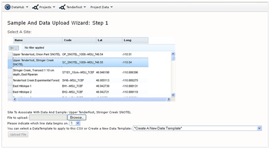
You can sort the site list by clicking on the header boxes, or define a custom filter by clicking the button on the upper left with the yellow arrow in it. Clicking this button calls the pop-out window below. Custom filtering rules are described using Boolean logic and can be applied to a single column, or multiple columns.
4. Next, browse to the file to be loaded. Click the ‘Open’ button.
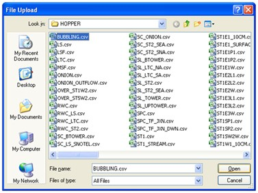
5. Select the row that the data sample values begin on. All rows above this row will be ignored when the data is loaded into VOEIS.
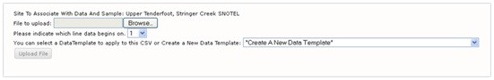
6. You must next decide whether to define a new parsing template for parsing your data, or reuse a previously defined template. Click ‘Upload File’.
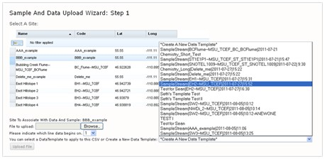
7. If you decided to parse your data with and existing template, skip to Step 9. Otherwise, you will need to name and describe the data template you are about to create. Select the appropriate Source, Sample Type, and Sample Medium information.
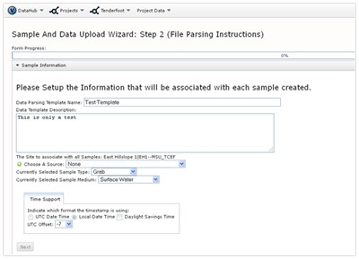
If the appropriate source is not already contained in the dropdown box, click the green button on the left. A pop-out window will appear and allow you to describe a new data source.
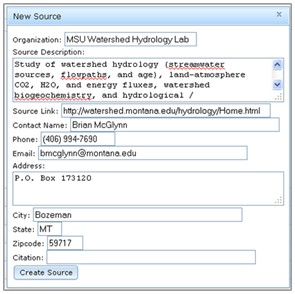
Describe the time support associated with your data file. You must identify whether your time stamps are recorded in UTC Date Time or Local Date Time. If they are recorded in Local Date Time, you need to select the UTC Offset (This is the time zone correction for the location where the measurements were collected) and identify whether or not a Daylight Savings Time adjustment needs to be applied to all timestamps in the file (e.g. the Montana UTC Offset is -7). Note: do NOT adjust the UTC Offset to account for Daylight Savings Time AND select the Daylight Savings Time checkbox. Account for Daylight Savings Time using only one of these methods.
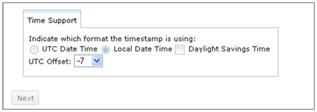
After all of the data descriptor dropdowns are populated, the ‘Next’ button will be activated. Click ‘Next’ to begin describing each of the columns in the data file.
8. Each column in the data file must be described using one of the options in the ‘Select Column Assignment’ dropdown list displayed below. The options ‘Assign The Timestamp To This Column’, ‘Assign The Sample ID To This Column’, and ‘Assign The Vertical Offset To This Column’ may only be used once.
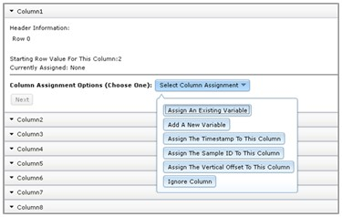
Variables can be assigned to a column of data sample values in two ways. The first method is to ‘Assign An Existing Variable’ to the column. When this option is selected, a data table pop-out appears. This table includes all of the variables previously described in this project. You can sort results in the data table by clicking one of the column header boxes. This will sort rows alphabetically (string values) or in ascending order (numeric values) by the values contained in the selected column. Secondary filters can be applied in subsequent columns in the same manner.
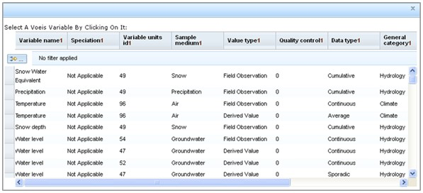
Another option for filtering the variables table is to apply custom filters. To do this, click the small button with the yellow arrow located in the upper left of the pop-out window. This button calls the pop-out window below. Custom filtering rules can be described using Boolean logic and applied to either a single column or multiple columns.
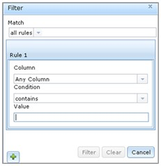
If you choose to select an existing variable, be sure to check each of the columns in the table to ensure that the variable you select is associated with the appropriate meta-data.
The second means for assigning a variable to a column of data values is to select the ‘Add A New Variable’ option from the ‘Select Column Assignment’ dropdown list. Selecting this option calls a pop-out window like the one shown below. You can add fields to dropdown lists using the green button to the left of the dropdown list title. After all of the required dropdown lists are populated, click the ‘Create Variable’ button.
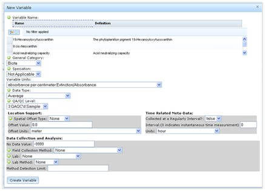
9. As columns in the data file are described, a summary of the parsing instructions is populated at the bottom of the page. Preview this summary to ensure that all of the data fields are defined correctly. If you spot an error in the summary table, simply scroll up to the column where the error exists and edit that column’s description.
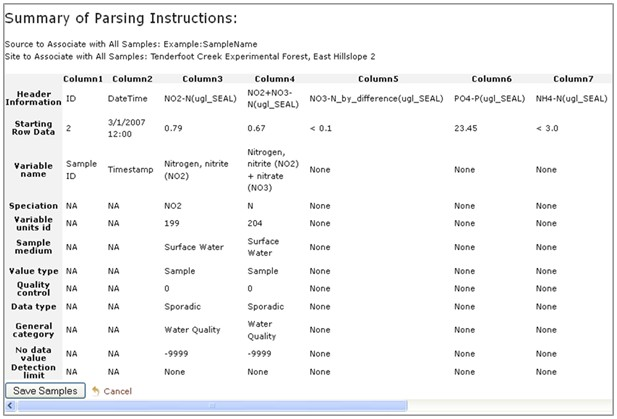
10. When all columns are described and the summary table has been checked carefully to ensure that the data file is correctly characterized, click the ‘Save Samples’ button.
Copyright © 2011, Montana State University
Created with the Freeware Edition of HelpNDoc: Free PDF documentation generator